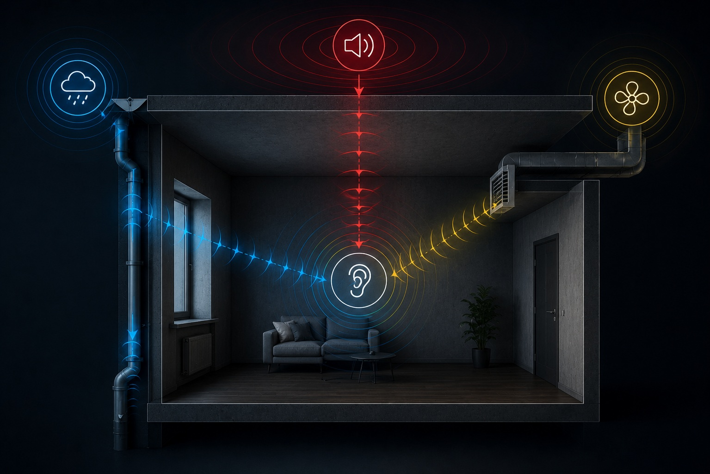

01
Источник слышен не там, где находится
Звук может приходить через перекрытие, стену, вентиляцию или узел примыкания. Обработка очевидной поверхности не всегда устраняет основной путь передачи.
ЦИА / ПОМЕЩЕНИЯ / АКУСТИЧЕСКОЕ ПРОЕКТИРОВАНИЕ
Исследуем помещение, измеряем фактические параметры и рассчитываем решение под конкретную конструкцию, источник шума и задачу.
Квартиры · дома · студии · кинотеатры · офисы · коммерческие и промышленные пространства
Замер фиксирует исходное состояние. Проект определяет, где и как нужно воздействовать. Контрольное исследование показывает фактический результат.
ЦИА / КТО МЫ
Центр инновационной акустики не продаёт «типовую шумоизоляцию». Мы фиксируем, как звук возникает, по каким путям передаётся через конструкции и где воспринимается — и только после этого проектируем достаточное решение.
Нажмите на этап цепочки — увидите, что именно исследует ЦИА на объекте.

01 / ЦЕНА ОШИБКИ
Одинаковый шум в двух квартирах может передаваться по разным путям. На результат влияют материал и толщина перекрытия, примыкания, инженерные коммуникации, качество монтажа, геометрия помещения и соседние конструкции.

01
Звук может приходить через перекрытие, стену, вентиляцию или узел примыкания. Обработка очевидной поверхности не всегда устраняет основной путь передачи.
02
Решение, которое работает на одной стене, может дать другой результат на лёгкой перегородке, монолите или сложном потолочном узле.
03
Избыточная система увеличивает бюджет, массу и потерю площади. Проектирование помогает определить достаточный состав решения.
04
Переделка готового потолка, стены или пола обычно сложнее и дороже исследования на этапе подготовки.
02 / УСЛУГИ
Два уровня работы связаны: замер даёт данные, проектирование переводит их в конструктивное решение. Выберите услугу — раскроется состав и результат.

Выездное исследование, которое фиксирует исходные параметры помещения и помогает определить вероятные источники и пути передачи шума.
Что может входить

Разработка решения под измеренные или подтверждённые исходные данные, требования к помещению и ограничения объекта.
Что может входить
Связь этапов
Фиксируем исходное состояние помещения профессиональным оборудованием.
Состав этапов зависит от задачи. Иногда достаточно замера и заключения. Для сложного объекта требуется полноценный проект и проверка результата.
03 / ОБЪЕКТ КАК СИСТЕМА
Материал, толщина, пустоты, розетки, сопряжения и соседние конструкции влияют на фактическую звукоизоляцию.
Мы рассматриваем всю цепочку передачи звука: источник, путь, конструкцию и точку восприятия.
04 / ПРОЦЕСС

Определяем тип объекта, характер проблемы, стадию ремонта, ограничения и ожидаемый результат.
Запрашиваем план, фотографии и доступные данные. Формируем программу выезда и перечень необходимых измерений.
Фиксируем исходное состояние профессиональным оборудованием по согласованной методике.
Сопоставляем результаты, характеристики конструкций, геометрию и вероятные пути передачи шума.
Передаём выводы, схемы, рекомендации, спецификацию и требования к реализации — в составе, соответствующем выбранной услуге.
При необходимости проводим повторные измерения и сравниваем фактический результат с исходным состоянием и проектными ожиданиями.
05 / РЕЗУЛЬТАТ
Проект должен быть понятен заказчику, архитектору и монтажной команде.

06 / ТИПЫ ПРОСТРАНСТВ
01
Соседи, лифт, улица, инженерные системы, ударный шум, планирование звукоизоляции до ремонта.
02
Разделение тихих и активных зон, оборудование, межэтажные перекрытия, домашний кинотеатр.
03
Звукоизоляция, контроль отражений, разборчивость речи, корректная работа помещения в заданном сценарии.
04
Конфиденциальность, снижение взаимных помех, речевая разборчивость и комфорт длительной работы.
05
Контроль шума оборудования и посетителей, защита соседних помещений, работа со сложной геометрией.
06
Локализация источника, анализ передачи шума, разработка технических мер с учётом эксплуатации.
07 / ПОДХОД
01
Решение опирается на измерения, сведения о конструкциях и реальные условия объекта.
02
Воздействуем на значимые зоны и не увеличиваем систему без обоснованной причины.
03
Исходное состояние фиксируется. После реализации результат можно исследовать повторно.
ЦИА формирует язык, на котором заказчик, проектировщик и подрядчик могут обсуждать акустический результат предметно.
08 / ВОПРОСЫ